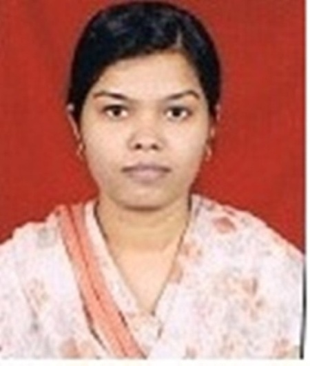

_5)Hardware Laboratory The department has well equipped laboratory for studying details of architectures of various generation of computers, microprocessors, and designing logic circuitries. Hands on practice are given to the students for hardware maintenance, fault finding and removal of faults in the computers, printers and interfacing circuits. Digital Signal processing laboratory is also available for studying the various signals, its transforms and systems. Various training kits and software are available. Advance microprocessor laboratory is designed to study various architecture of microprocessors, assembly language programming and interfacing of circuits. In this Lab C-LAB (Hardware LAB) & Embedded Systems LABS Practicals are conducted.
| _1)Open source Laboratory Central Lab A & B This labs is equipped with advanced 50 computers having i3 core processor, 500 GB HDD ,4GB RAM , Wi-Fi enabled on Linux Environment . In this lab following practicals are conducted like,STLD, DS,CP,ALP,DAA. |
|
| _2)Advance Software Laboratory This labs is equipped with advanced 20 computers having core 2 Duo processor, 500 GB HDD ,2GB RAM. In this lab following practicals are conducted like Artificial Intelligence LAB,OOAD, C-Skills Lab & C-LAB II |
 |
| _3)Computer Programming Laboratory (CP-LAB) This lab is equipped with advanced 20 computers having P4 Processor. In this lab following practicals are conducted like Computer Programming, DBS, C LAB I, PM. | |
| _4)Project Laboratory This lab is equipped with advanced 32 computers having inter net facility for doing different research projects. In this lab following practicals are conducted like DSP, OS, OOPS. | |
|
Name :-Prof. Abhay A. Dande |  |
|
Name :- Prof. Ms. M.A.Patil |  |
|
Name :- Prof. Ms. M.K.Sadar |  |
|
Name :- Prof. Ms. Ashwini D. Bhople |  |